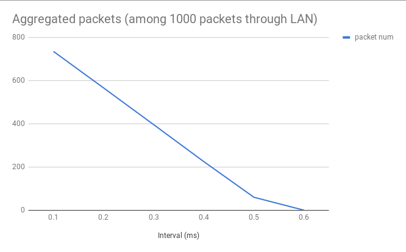
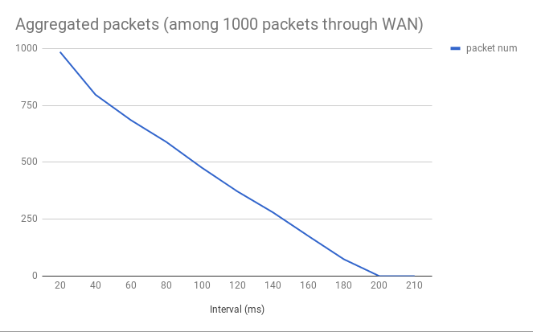
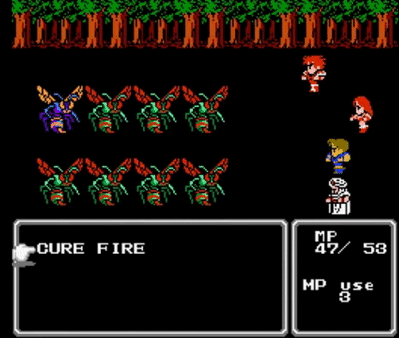

<!DOCTYPE html>
<html>
<head><meta name="generator" content="Hexo 3.9.0">
  <meta charset="utf-8">
  
  <title>Holmes He</title>

  

  <meta name="viewport" content="width=device-width, initial-scale=1, maximum-scale=1">
  <meta name="viewport" content="width=device-width, initial-scale=1, maximum-scale=1">
  
  <meta name="keywords" content="networksocketsetsockoptSOL_TCPTCP_NODELAYpacket aggregationnagle algorithm">
  
  
  
  
  <meta name="description" content="Latency, instead of throughput, is found as the system bottleneck more often than not. However, the TCP socket enables a so-called nagle algorithm by default, which delays an egress packet in order to">
<meta name="keywords" content="network,socket,setsockopt,SOL_TCP,TCP_NODELAY,packet aggregation,nagle algorithm">
<meta property="og:type" content="article">
<meta property="og:title" content="setsockopt, TCP_NODELAY and Packet Aggregation I">
<meta property="og:url" content="https://holmeshe.me/network-essentials-setsockopt-TCP_NODELAY/index.html">
<meta property="og:site_name" content="Holmes He">
<meta property="og:description" content="Latency, instead of throughput, is found as the system bottleneck more often than not. However, the TCP socket enables a so-called nagle algorithm by default, which delays an egress packet in order to">
<meta property="og:locale" content="default">
<meta property="og:image" content="https://holmeshe.me/gallery/nagle-lan.png">
<meta property="og:image" content="https://holmeshe.me/gallery/nagle-wan.png">
<meta property="og:image" content="https://holmeshe.me/gallery/old-rpg.gif">
<meta property="og:updated_time" content="2020-12-22T10:48:38.121Z">
<meta name="twitter:card" content="summary">
<meta name="twitter:title" content="setsockopt, TCP_NODELAY and Packet Aggregation I">
<meta name="twitter:description" content="Latency, instead of throughput, is found as the system bottleneck more often than not. However, the TCP socket enables a so-called nagle algorithm by default, which delays an egress packet in order to">
<meta name="twitter:image" content="https://holmeshe.me/gallery/nagle-lan.png">
  
  <link rel="icon" href="/gallery/air-balloon.svg">
  
    <link href="//fonts.googleapis.com/css?family=Source+Code+Pro" rel="stylesheet" type="text/css">
  
  <link href="https://fonts.googleapis.com/css?family=Open+Sans|Montserrat:700" rel="stylesheet" type="text/css">
  <link href="https://fonts.googleapis.com/css?family=Roboto:400,300,300italic,400italic" rel="stylesheet" type="text/css">
  <link href="/css/font-awesome.min.css" rel="stylesheet">
  <style type="text/css">
    @font-face{font-family:futura-pt;src:url(https://use.typekit.net/af/9749f0/00000000000000000001008f/27/l?subset_id=2&fvd=n5) format("woff2");font-weight:500;font-style:normal;}
    @font-face{font-family:futura-pt;src:url(https://use.typekit.net/af/90cf9f/000000000000000000010091/27/l?subset_id=2&fvd=n7) format("woff2");font-weight:500;font-style:normal;}
    @font-face{font-family:futura-pt;src:url(https://use.typekit.net/af/8a5494/000000000000000000013365/27/l?subset_id=2&fvd=n4) format("woff2");font-weight:lighter;font-style:normal;}
    @font-face{font-family:futura-pt;src:url(https://use.typekit.net/af/d337d8/000000000000000000010095/27/l?subset_id=2&fvd=i4) format("woff2");font-weight:400;font-style:italic;}</style>
    
  <link rel="stylesheet" id="athemes-headings-fonts-css" href="//fonts.googleapis.com/css?family=Yanone+Kaffeesatz%3A200%2C300%2C400%2C700&amp;ver=4.6.1" type="text/css" media="all">

  <link rel="stylesheet" id="athemes-headings-fonts-css" href="//fonts.googleapis.com/css?family=Oswald%3A300%2C400%2C700&amp;ver=4.6.1" type="text/css" media="all">
  <link rel="stylesheet" href="/css/style.css">

  <script src="/js/jquery-3.1.1.min.js"></script>

  <!-- Bootstrap core CSS -->
  <link rel="stylesheet" href="/css/bootstrap.css">
  <link rel="stylesheet" href="/css/fashion.css">
  <link rel="stylesheet" href="/css/glyphs.css">

</head>
</html>


  <body data-spy="scroll" data-target="#toc" data-offset="50">


  


<header id="allheader" class="site-header" role="banner" 
   
>
  <div class="clearfix container">
      <div class="site-branding">

          <h1 class="site-title">
            
              <a href="/" rel="home" >
                
              </a>
            
          </h1>
          
          <div class="site-description">
            \{C}0de<t>a1k(s) =>
            <text id="message">
              
            </text>
            ( ͡° ͜ʖ ͡°)
            <a class='ext-link' href="/atom.xml">
              <i class="fas fa-rss fa-lg"></i>
            </a>
          </div>
            
          <nav id="main-navigation" class="main-navigation" role="navigation">
            <a class="nav-open">Menu</a>
            <a class="nav-close">Close</a>

            <div class="clearfix sf-menu">
              <ul id="main-nav" class="menu sf-js-enabled sf-arrows"  style="touch-action: pan-y;">
                    
                      <li class="menu-item menu-item-type-custom menu-item-object-custom menu-item-home menu-item-1663"> <a class="" href="/">Home</a> </li>
                    
                      <li class="menu-item menu-item-type-custom menu-item-object-custom menu-item-home menu-item-1663"> <a class="" href="/categories">Series</a> </li>
                    
              </ul>
            </div>
          </nav>

      </div>
  </div>
</header>


  <div id="container">
    <div id="wrap">
            
      <div id="content" class="outer">
        
          <section id="main" style="float:none;"><article id="post-network-essentials-setsockopt-TCP_NODELAY" style="width: 66%; float:left;" class="article article-type-post" itemscope itemprop="blogPost" >
  <div id="articleInner" class="clearfix post-1016 post type-post status-publish format-standard has-post-thumbnail hentry category-template-2 category-uncategorized tag-codex tag-edge-case tag-featured-image tag-image tag-template">
    
    
      <header class="article-header">
        
  
    <h1 class="thumb" class="article-title" itemprop="name">
      setsockopt, TCP_NODELAY and Packet Aggregation I
    </h1>
  

      </header>
    
    <div class="article-meta">
      
	<a href="/network-essentials-setsockopt-TCP_NODELAY/" class="article-date">
	  <time datetime="2018-06-08T23:47:00.000Z" itemprop="datePublished">June 9, 2018</time>
	</a>

      
	<span class="ico-folder"></span>
    <a class="article-category-link" href="/categories/Network-Essentials/">Network Essentials</a>
 
      
    </div>
    
    <div class="article-entry" itemprop="articleBody">
      
        <p>Latency, instead of throughput, is found as the system bottleneck more often than not. However, the TCP socket enables a so-called <em>nagle algorithm</em> by default, which delays an egress packet in order to coalesces it with one that could be sent in the future, into a single TCP segment. This effectively reduces the number of TCP segments and the bandwidth overhead used by the TCP headers, whilst potentially imposes latency for every network request (response) being sent.</p>
<blockquote>
<p>Lock, and his temperamental brother, Block, are the two notorious villains in the world of programming. In the beginning, they always show up to assist. But sooner or later, they will kick your back-end like really hard.</p>
</blockquote>
<p>When I consider about <em>nagle algorithem</em>, it seems to me another scenario involving block operations which are meant to be helpful. So I decide to put hands on a keyboard to test if I am wrong.</p>
<p><strong>Software setup</strong><br><em>Client OS: Debian 4.9.88</em><br><em>Server OS (LAN &amp; WAN): Unbutu 16.04</em><br><em>gcc: 6.3.0</em></p>
<p><strong>Hardware (or VM) setup</strong><br><em>Server (LAN): Intel® Core™2 Duo CPU E8400 @ 3.00GHz × 2, 4GB</em><br><em>Server (WAN): t2.micro, 1GB</em></p>
<a id="more"></a>
<h1 id="The-impact-nagle-algorithm-has-on-latency"><a href="#The-impact-nagle-algorithm-has-on-latency" class="headerlink" title="The impact nagle algorithm has on latency"></a>The impact <em>nagle algorithm</em> has on latency</h1><p>First thing first, the code of client:</p>
<script src="https://gist.github.com/holmeshe/f8737a7aecbf368fdfe6fa0c5d0f897a.js"></script>

<p>and server:</p>
<script src="https://gist.github.com/holmeshe/6fc669c486b2070e2e482420ad0d0272.js"></script>

<p>The client code given above sends 1000 packets 4 bytes long in an interval indicated by the last command line argument. And as discussed, it adopts the default TCP behavior by default. The server is not different than a discard server, so the code is irrelevant here.</p>
<p>In this test, I will record the number of packets that are aggregated in different intervals, by adjusting the mentioned argument. This way, we can grasp the extent of latency the <em>nagle algorithm</em> can impose. The same test is conducted in both LAN (RTT &lt; 0.6ms) and WAN (RTT ≈ 200ms).</p>
<p></p>
<p></p>
<p>As given in the figures, the number aggregated packets approaches to 0 when the interval is greater than the RTT. This conforms to what described in &lt;&lt;TCP/IP Illustrated&gt;&gt;</p>
<blockquote>
<p>This algorithm says that a TCP connection can have only one outstanding small segment that has not yet been acknowledged. No additional small segments can be sent until the acknowledgment is received.</p>
</blockquote>
<p>If looking at the <code>tcpdump</code> output, we can also see that this algorithm effectively changes the sending interval to the RTT regardless of the actual <code>write(2)</code> frequency of the program. And the packets between two sends are those being aggregated.</p>
<figure class="highlight plain"><table><tr><td class="code"><pre><span class="line">...</span><br><span class="line">18:34:52.986972 IP debian.53700 &gt; ******.compute.amazonaws.com.6666: Flags [P.], seq 4:12, ack 1, win 229, options [nop,nop,TS val 7541746 ecr 2617170332], length 8</span><br><span class="line">18:34:53.178277 IP debian.53700 &gt; ******.amazonaws.com.6666: Flags [P.], seq 12:20, ack 1, win 229, options [nop,nop,TS val 7541794 ecr 2617170379], length 8</span><br><span class="line">18:34:53.369431 IP debian.53700 &gt; ******.amazonaws.com.6666: Flags [P.], seq 20:32, ack 1, win 229, options [nop,nop,TS val 7541842 ecr 2617170427], length 12</span><br><span class="line">18:34:53.560351 IP debian.53700 &gt; ******.amazonaws.com.6666: Flags [P.], seq 32:40, ack 1, win 229, options [nop,nop,TS val 7541890 ecr 2617170475], length 8</span><br><span class="line">18:34:54.325242 IP debian.53700 &gt; ******.amazonaws.com.6666: Flags [P.], seq 68:80, ack 1, win 229, options [nop,nop,TS val 7542081 ecr 2617170666], length 12</span><br><span class="line">...</span><br></pre></td></tr></table></figure>
<p><strong>As a result, the delay imposed on every packet by the algorithm is RTT on average and 2 * RTT in worst case.</strong></p>
<h1 id="Combined-with-delayed-ACK"><a href="#Combined-with-delayed-ACK" class="headerlink" title="Combined with delayed ACK"></a>Combined with delayed ACK</h1><p>Delayed ACK is another similar algorithm, here I will just use the lines from &lt;&lt;TCP/IP Illustrated&gt;&gt; to brief the mechanism</p>
<blockquote>
<p>TCP will delay an ACK up to 200 ms to see if there is data to send with the ACK.</p>
</blockquote>
<p>Apperantly <em>nagle algorithm</em> is <a href="https://news.ycombinator.com/item?id=10607422" target="_blank" rel="noopener">not happy</a> with <em>delayed ACK</em>.</p>
<p>In some cases when the back-end do not reply instantly to a request, <em>delayed ACK</em> will have to wait for another request which is potentially delayed by <em>nagle algorithm</em> waiting for ACK. This senario where two resources waiting for each other, in another word, is called a dead-lock. </p>
<blockquote>
<p>Remember the two brothers mentioned in the beginning?</p>
</blockquote>
<p>Unfortunately, in my environments, seems like the <em>delayed ACK</em> is disabled by default and I failed to enable it by</p>
<figure class="highlight plain"><table><tr><td class="code"><pre><span class="line">flags = 0;</span><br><span class="line">flglen = sizeof(flags);</span><br><span class="line">getsockopt(sfd, SOL_TCP, TCP_QUICKACK, &amp;flags, &amp;flglen)</span><br></pre></td></tr></table></figure>
<p>So I could not hand test the compounded impact.</p>
<h1 id="Discussion"><a href="#Discussion" class="headerlink" title="Discussion"></a>Discussion</h1><p>At the moment when I am writing, except for <em>telnet</em>, most of the other applications, including those of front-end(<em>Firefox</em>, <em>Chromium</em>), back-end(<em>nginx</em>, <em>memcached</em>), and the <em>telnet</em>‘s substitute, <em>ssh</em>, disable <em>nagle algorithm</em> with some code like bellow,</p>
<figure class="highlight plain"><table><tr><td class="code"><pre><span class="line">int flags =1;</span><br><span class="line">setsockopt(sfd, SOL_TCP, TCP_NODELAY, (void *)&amp;flags, sizeof(flags));</span><br></pre></td></tr></table></figure>
<p>which indicates that the packets should be emitted as it is.</p>
<figure class="highlight plain"><table><tr><td class="code"><pre><span class="line">...</span><br><span class="line">18:22:38.983278 IP debian.43808 &gt; 192.168.1.71.6666: Flags [P.], seq 1:5, ack 1, win 229, options [nop,nop,TS val 7358245 ecr 6906652], length 4</span><br><span class="line">18:22:38.984149 IP debian.43808 &gt; 192.168.1.71.6666: Flags [P.], seq 5:9, ack 1, win 229, options [nop,nop,TS val 7358246 ecr 6906652], length 4</span><br><span class="line">18:22:38.985028 IP debian.43808 &gt; 192.168.1.71.6666: Flags [P.], seq 9:13, ack 1, win 229, options [nop,nop,TS val 7358246 ecr 6906653], length 4</span><br><span class="line">18:22:38.985897 IP debian.43808 &gt; 192.168.1.71.6666: Flags [P.], seq 13:17, ack 1, win 229, options [nop,nop,TS val 7358246 ecr 6906653], length 4</span><br><span class="line">18:22:38.986765 IP debian.43808 &gt; 192.168.1.71.6666: Flags [P.], seq 17:21, ack 1, win 229, options [nop,nop,TS val 7358246 ecr 6906653], length 4</span><br><span class="line">...</span><br></pre></td></tr></table></figure>
<p>I think the reasons behind the prevalence of <code>TCP_NODELAY</code> are as follows,<br>1) the increasing bandwidth makes the benefits of <em>nagle algorithm</em> more and more negligible - it requires hundreds of thousands of tinygrams to saturate an edge node with mediocre bandwidth nowadays; and<br>2) app that generate a lot of tinygram tend to demand low latency.</p>
<p>To conclude, technically, it’s probably not a good idea to turn a modern real-time on-line battle arena into some (200 ms) turn based 80s RPG.</p>
<p></p>
<h1 id="References"><a href="#References" class="headerlink" title="References"></a>References</h1><p><a href="https://www.amazon.com/TCP-Illustrated-Vol-Addison-Wesley-Professional/dp/0201633469" target="_blank" rel="noopener">TCP/IP Illustrated</a><br><a href="https://tools.ietf.org/html/rfc896" target="_blank" rel="noopener">RFC 896</a><br><a href="https://news.ycombinator.com/item?id=10607422" target="_blank" rel="noopener">Hacker news</a></p>

      
    </div>
    
    <p>
    <div>
        
          That's it. Did I make a serious mistake? or miss out on anything important? Or you simply like the read. Link me on <a class="ext-link" href='https://medium.com/backend/setsockopt-tcp-nodelay-and-packet-aggregation-i-c1ea56aefb5e'>
            <i class="fa fa-medium" aria-hidden="true"></i>
          </a>  -- I'd be chuffed to hear your feedback.
        
    </div>
    
    <p>
    <footer class="entry-meta entry-footer">
      
	<span class="ico-folder"></span>
    <a class="article-category-link" href="/categories/Network-Essentials/">Network Essentials</a>

      
  <span class="ico-tags"></span>
  <ul class="article-tag-list"><li class="article-tag-list-item"><a class="article-tag-list-link" href="/tags/SOL-TCP/">SOL_TCP</a></li><li class="article-tag-list-item"><a class="article-tag-list-link" href="/tags/TCP-NODELAY/">TCP_NODELAY</a></li><li class="article-tag-list-item"><a class="article-tag-list-link" href="/tags/nagle-algorithm/">nagle algorithm</a></li><li class="article-tag-list-item"><a class="article-tag-list-link" href="/tags/network/">network</a></li><li class="article-tag-list-item"><a class="article-tag-list-link" href="/tags/packet-aggregation/">packet aggregation</a></li><li class="article-tag-list-item"><a class="article-tag-list-link" href="/tags/setsockopt/">setsockopt</a></li><li class="article-tag-list-item"><a class="article-tag-list-link" href="/tags/socket/">socket</a></li></ul>

      
    </footer>
    <hr class="entry-footer-hr">
  </div>
  
    
<nav id="article-nav">
  
    <a href="/understanding-memcached-source-code-I/" id="article-nav-newer" class="article-nav-link-wrap">
      <strong class="article-nav-caption">Newer</strong>
      <div class="article-nav-title">
        
          Understanding The Memcached Source Code - Slab I
        
      </div>
    </a>
  
  
    <a href="/network-essentials-setsockopt-SO_KEEPALIVE/" id="article-nav-older" class="article-nav-link-wrap">
      <strong class="article-nav-caption">Older</strong>
      <div class="article-nav-title">setsockopt, SO_KEEPALIVE and Heartbeats</div>
    </a>
  
</nav>

  
</article>

<!-- Table of Contents -->

  <aside id="sidebar">
    <div id="toc" class="toc-article">
    <strong class="toc-title">Contents</strong>
    
      <ol class="nav"><li class="nav-item nav-level-1"><a class="nav-link" href="#The-impact-nagle-algorithm-has-on-latency"><span class="nav-number">1.</span> <span class="nav-text">The impact nagle algorithm has on latency</span></a></li><li class="nav-item nav-level-1"><a class="nav-link" href="#Combined-with-delayed-ACK"><span class="nav-number">2.</span> <span class="nav-text">Combined with delayed ACK</span></a></li><li class="nav-item nav-level-1"><a class="nav-link" href="#Discussion"><span class="nav-number">3.</span> <span class="nav-text">Discussion</span></a></li><li class="nav-item nav-level-1"><a class="nav-link" href="#References"><span class="nav-number">4.</span> <span class="nav-text">References</span></a></li></ol>
    
    </div>
  </aside>

</section>
        
      </div>

    </div>
    <!-- <nav id="mobile-nav">
  
    <a href="/" class="mobile-nav-link">Home</a>
  
    <a href="/categories" class="mobile-nav-link">Categories</a>
  
</nav> -->
    <footer id="footer" class="site-footer">
  

  <div class="clearfix container">
      <div class="site-info">
	      &copy; 2020 Holmes He 
        
              <a class='ext-link' href="https://creativecommons.org/licenses/by-nd/4.0/">
                
              </a>
              <a class='ext-link' href="mailto:holmeshe@hotmail.com">
                <i style="color:#9ea6a6;" class="fas fa-envelope"></i>
              </a>
      </div>
      <div class="site-credit">
        Theme by <a href="https://github.com/iTimeTraveler/hexo-theme-hipaper" target="_blank">hipaper</a>, icons by <a href="https://www.flaticon.com/authors/prettycons" title="prettycons">prettycons</a>, <a href="https://www.freepik.com/" title="Freepik">Freepik</a> and <a href="https://www.flaticon.com/authors/google" title="Google">Google</a> on <a href="https://www.flaticon.com/" title="Flaticon">www.flaticon.com</a>
      </div>
  </div>
</footer>


<!-- min height -->

<script>
    var wrapdiv = document.getElementById("wrap");
    var contentdiv = document.getElementById("content");

    wrapdiv.style.minHeight = document.body.offsetHeight - document.getElementById("allheader").offsetHeight - document.getElementById("footer").offsetHeight + "px";
    contentdiv.style.minHeight = document.body.offsetHeight - document.getElementById("allheader").offsetHeight - document.getElementById("footer").offsetHeight + "px";


    <!-- headerblur min height -->
    
    
</script>

    

<!-- mathjax config similar to math.stackexchange -->

<script type="text/x-mathjax-config">
  MathJax.Hub.Config({
    tex2jax: {
      inlineMath: [ ['$','$'], ["\\(","\\)"] ],
      processEscapes: true
    }
  });
</script>

<script type="text/x-mathjax-config">
    MathJax.Hub.Config({
      tex2jax: {
        skipTags: ['script', 'noscript', 'style', 'textarea', 'pre', 'code']
      }
    });
</script>

<script type="text/x-mathjax-config">
    MathJax.Hub.Queue(function() {
        var all = MathJax.Hub.getAllJax(), i;
        for(i=0; i < all.length; i += 1) {
            all[i].SourceElement().parentNode.className += ' has-jax';
        }
    });
</script>

<script type="text/javascript" src="https://cdn.mathjax.org/mathjax/latest/MathJax.js?config=TeX-AMS-MML_HTMLorMML">
</script>


  <link rel="stylesheet" href="/fancybox/jquery.fancybox.css">
  <script src="/fancybox/jquery.fancybox.pack.js"></script>


<script src="/js/script.js"></script>
<script src="/js/bootstrap.js"></script>
<script src="/js/main.js"></script>


<!-- Google Analytics -->
<script type="text/javascript">
(function(i,s,o,g,r,a,m){i['GoogleAnalyticsObject']=r;i[r]=i[r]||function(){
(i[r].q=i[r].q||[]).push(arguments)},i[r].l=1*new Date();a=s.createElement(o),
m=s.getElementsByTagName(o)[0];a.async=1;a.src=g;m.parentNode.insertBefore(a,m)
})(window,document,'script','//www.google-analytics.com/analytics.js','ga');

ga('create', 'UA-104935393-1', 'auto');
ga('send', 'pageview');

</script>
<script async src="//pagead2.googlesyndication.com/pagead/js/adsbygoogle.js"></script>
<script>
  (adsbygoogle = window.adsbygoogle || []).push({
    google_ad_client: "ca-pub-5381847417546942",
    enable_page_level_ads: true
  });
</script>
<!-- End Google Analytics -->
<!--<script type="text/javascript"> var infolinks_pid = 3169448; var infolinks_wsid = 0; </script> <script type="text/javascript" src="//resources.infolinks.com/js/infolinks_main.js"></script> -->


  </div>

  <a id="rocket" href="#top" class=""></a>
  <script type="text/javascript" src="/js/totop.js" async=""></script>
  <script type="text/javascript" src="/js/cust.js" async=""></script>
</body>
</html>
